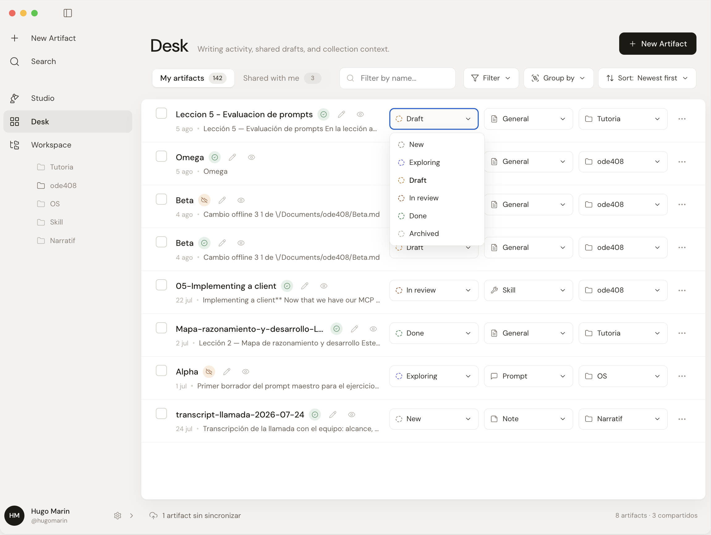
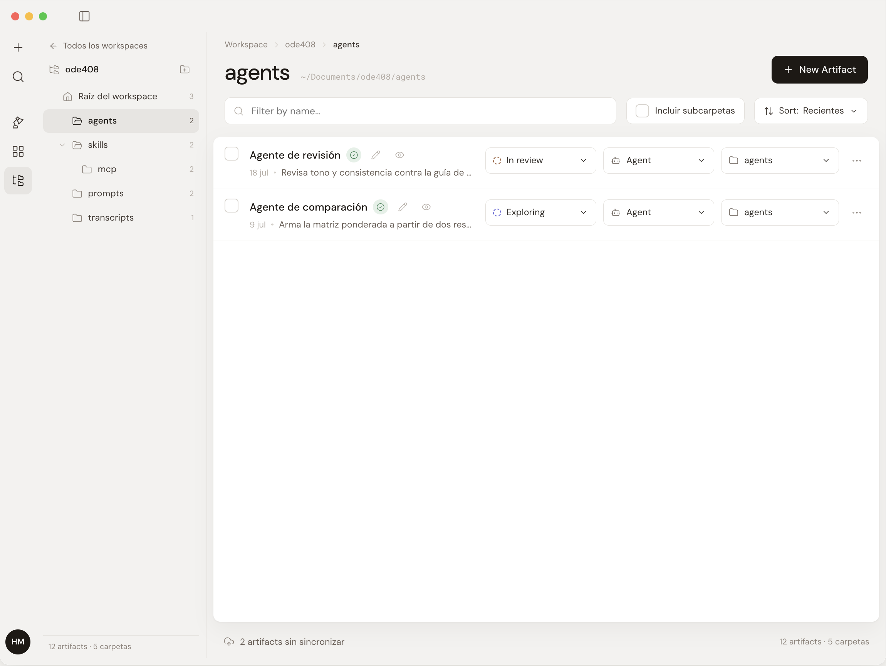
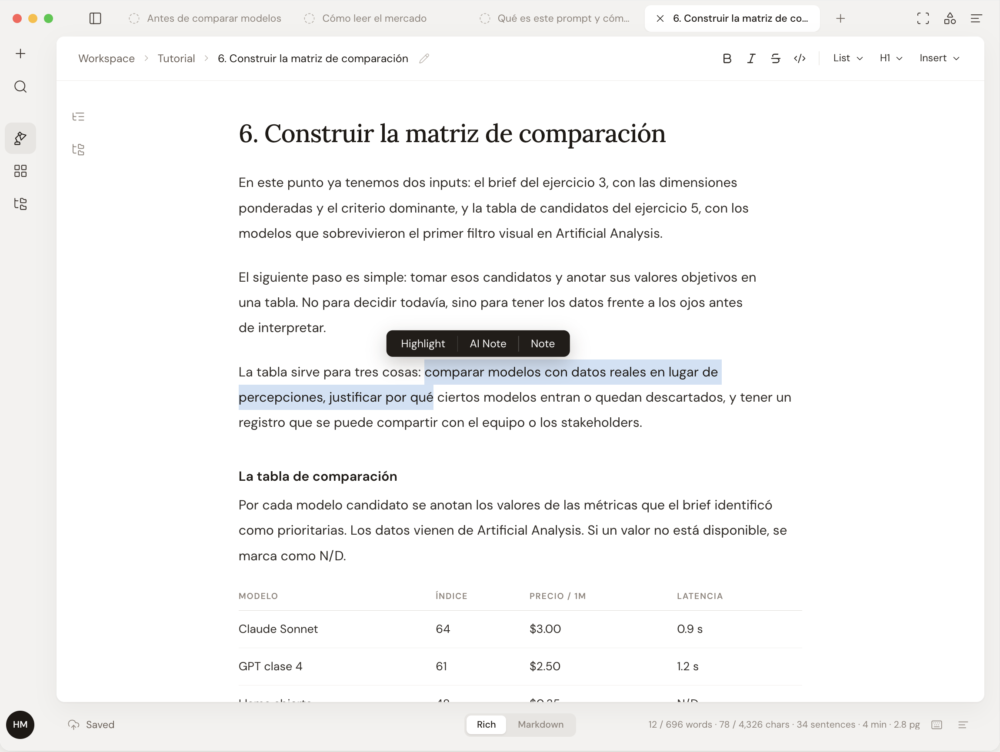
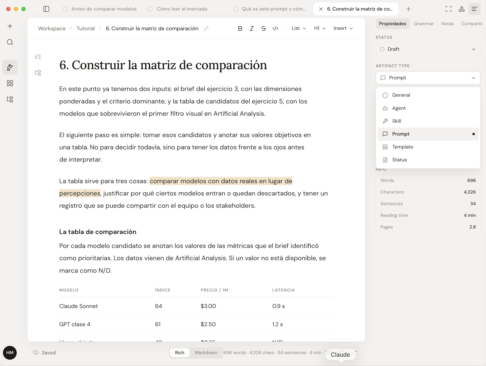
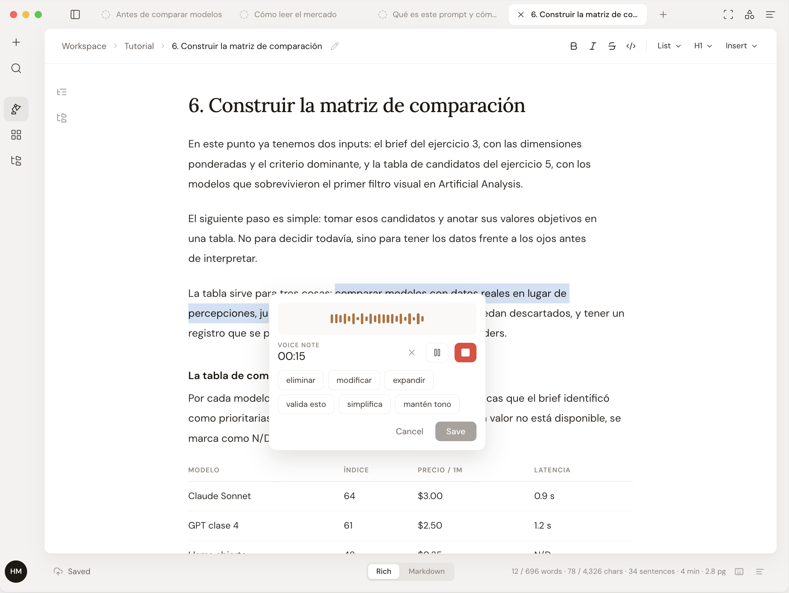
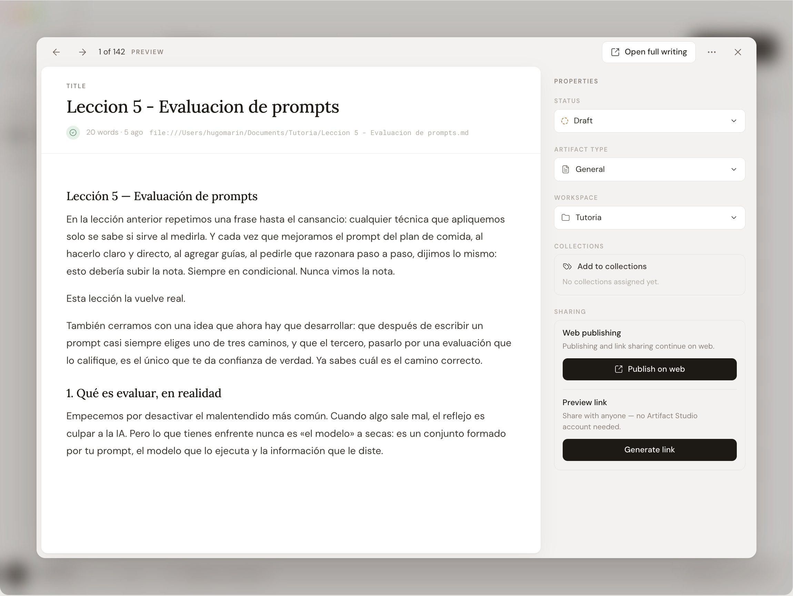

Workspace para archivos creados con IA · v0.4
Claude Code, Codex o Cursor escriben en tu proyecto. Artifact Studio abre esos mismos archivos como documentos: se leen, se editan, se organizan y se comparten sin exportar ni duplicar nada. El .md sigue siendo .md.
El Desk · tus artifacts en un lugar

El problema
El modelo escribe en un minuto. Después vienen las tres horas de mover ese texto entre herramientas, y cada salto deja una copia más.
Un solo archivo, dos interfaces. La nube agrega sync, links y colaboración sin sacarlo de tu proyecto.
Qué hace
El archivo sigue siendo Markdown en tu filesystem: portable, versionable, legible por cualquier agente. La experiencia de leerlo y editarlo no tiene por qué sentirse como Markdown.
El mismo archivo que modifica Codex es el documento que vos leés. Sin importar, sin migrar, sin una segunda fuente de verdad viviendo en otra herramienta.


De cerca

Tipos Un prompt no es un reporte Prompt, spec, skill, template o agente: cada tipo se comporta distinto. El tipo es una propiedad del artifact, no una carpeta más.
Notas de voz Dictá la corrección, no la escribas Marcás el fragmento, dictás qué hay que cambiar y elegís la acción: expandir, simplificar, mantener tono.
Compartir De archivo local a documento compartible Publicás el artifact y queda una URL que cualquiera abre. Compartís el documento, no otra versión del documento.“Antes exportaba a Docs para que alguien lo leyera y ahí nacía la copia paralela. Ahora comparto el mismo archivo que el agente sigue editando.”
El método
Abrí la carpeta donde ya trabajan tus agentes y en un minuto vas a estar leyendo esos archivos como documentos.